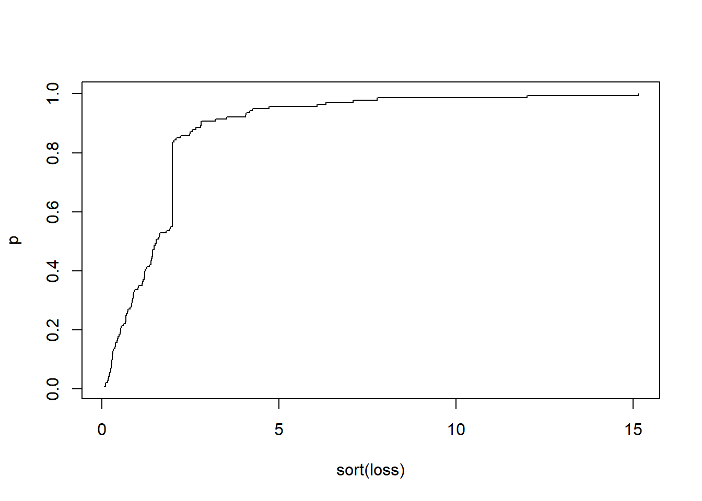

Chapter 4 风险度量
4.1 风险度量的原则
精算和风险管理的基础是对风险进行合理的度量。
从数学上看，风险是用概率方法描述的，风险度量把一个代表风险的随机变量转化为一个实值的过程。
假设 \(X\) 表示随机风险，\(\rho\) 为风险度量方法，\(r\) 为风险度量值，则风险度量过程可以表示为： \[r = \rho(X)\]
其中，\(\rho\) 就是将随机风险转化为非负实数的一个风险度量函数。
常用的风险度量方法有：
基于方差、半方差等的离差方法
基于在险价值、条件在险价值等的分位数方法
极值理论
这一节我们主要介绍常用的分位数风险度量方法和极值理论。
4.2 风险度量的一致性要求
风险的度量必须遵循一定的原则，合理的风险度量方法应该与经济原理、与人们的认知一致，不会出现悖论。因此，风险应该满足一致性风险度量公理体系。
一致性风险度量是指风险度量 \(\rho\) 对任意两个随机变量 \(X\) 和 \(Y\) 应满足以下4个特性：
次可加性(Subadditivity): \(\rho(X) + \rho(Y) \le \rho(X+Y)\)
单调性 (Monotonicity): 若 \(X\le Y\) 则\(\rho(X)\le \rho(Y)\)
正齐次性 (Positive homogeneity): 对于任意常数\(c>0\), \(\rho(cX)=c\rho(X)\)
平移不变性 (Translation invariance): 对于任意正常数 \(c\), \(\rho(X+c)=\rho(X)+c\)
4.3 VaR（Value-at-Risk，在险价值）
定义：如果 \(X\) 表示随机风险造成的损失，那么 \(X\) 在100p水平上的 VaR ，记为 \(VaR_p(X)\) 或 \(\pi_p\) 是X的分布的\(100p\) 分位数。
对于连续性分布，我们有
\[ \Pr(X>\pi_p)=1-p. \]
在险价值是指在一定的置信水平下，在未来特定的一段时间内的最大可能损失
至少有 \(p=0.95,0.99,0.999...\) 的把握保证最大损失不超过 \(x\)
不满足一致性的例子:
假设 \(Z\) 是一个连续损失随机变量，其分布函数为：
\[ \begin{align*} &F_Z(1) = 0.91 \\ & F_Z(90) = 0.95\\ & F_Z(100) = 0.96 \end{align*} \]
\(VaR_{95\%}(Z) = 90\)
假设我们把风险\(Z\)拆分成两个独立的风险\(X\)和\(Y\)，使两个风险的总和相当于风险 \(Z\)，即\(X+Y=Z\)
\[ X=\begin{cases} Z, & \quad Z\le 100,\\ 0, & \quad Z> 100, \end{cases} \] 和 \[ Y=\begin{cases} 0, & \quad Z\le 100,\\ Z, & \quad Z> 100. \end{cases} \] 那么\(VaR_{95\%}(X) = 1\)并且\(VaR_{95\%}(Y) \le 0\)
\[ VaR_{95\%}(Z) = VaR_{95\%}(X+Y) > VaR_{95\%}(X) + VaR_{95\%}(Y). \]
4.4 TVaR （Tail-Value-at-Risk，尾部在险价值）
TVaR 弥补了 VaR 方法作为风险度量函数不满足次可加性的缺陷，因而是一个具有优良性质的一致性风险度量函数。
定义：TVaR 是超过的损失 \(VaR_p(X)\) 的期望值，即 \(TVaR_p\) 是最坏的 \(100(1-p)%\) 损失的期望值。\(TVaR_p\) 定义为：
\[ \begin{align*} & \\ & \text{TVa}{{\text{R}}_{p}}(X)=\frac{\int_{p}^{1}{\text{Va}{{\text{R}}_{u}}(X)du}}{1-p} \end{align*} \]
其中，TVaR 可以理解为是在区间（p, 1）上的VaR 的算数平均数，因此在相同的概率水平下，TVaR大于VaR的度量结果。
性质: 对于连续分布而言，TVaRp还可以写成更为直观的表达式：
\[ \begin{align*} \text{TVa}{{\text{R}}_{p}}(X) =\mathbb{E}(X|X>\text{Va}{{\text{R}}_{p}}) &= \frac{\int_{\text{Va}{{\text{R}}_{p}}}^{\infty }{xf(x)dx}}{1-F(\text{Va}{{\text{R}}_{p}})}\\ &=\frac{\int_{\text{Va}{{\text{R}}_{p}}}^{\infty }{xf(x)dx}}{1-p} \end{align*} \] -证明
\[ \begin{align*} \text{TVa}{{\text{R}}_{p}}(X)& =\frac{\int_{\text{Va}{{\text{R}}_{p}}}^{\infty }{xf(x)dx}}{1-p}\text{ } \\ & =\frac{\int_{\text{Va}{{\text{R}}_{p}}}^{\infty }{x\text{d}F(x)}}{1-p} \quad\quad \text{ if }F(x)=u\Rightarrow x=\text{Va}{{\text{R}}_{u}}(X) \\ & =\frac{\int_{p}^{1}{\text{Va}{{\text{R}}_{u}}(X)du}}{1-p} \end{align*} \] 例：假设随机变量服从参数为\((\mu,\sigma)\)的正态分布，求该正态分布VaR和TVaR的表达式。
\[ \text{Va}{{\text{R}}_{p}}(X)=\mu +\sigma \text{ }{{\Phi }^{-1}}(p), \]
\[ \text{TVa}{{\text{R}}_{p}}(X)=\mu +\frac{\sigma }{1-p}\phi \left[ {{\Phi }^{-1}}(p) \right]. \]
\[ \begin{align*} \text{TVa}{{\text{R}}_{p}}(X)& =\frac{\int_{p}^{1}{\text{Va}{{\text{R}}_{u}}(X)du}}{1-p}=\frac{\int_{p}^{1}{\left[ \mu +\sigma {{\Phi }^{-1}}(u) \right]du}}{1-p} \\ & =\mu +\frac{\sigma }{1-p}\int_{p}^{1}{{{\Phi }^{-1}}(u)du} \quad \text{ let }u=\Phi (x) \\ & =\mu +\frac{\sigma }{1-p}\int_{{{\Phi }^{-1}}(p)}^{\infty }{x\phi (x)dx} \\ & =\mu +\frac{\sigma }{1-p}\phi \left[ {{\Phi }^{-1}}p \right] \end{align*} \] 如果损失分布是离散的，计算 TVaR 会复杂一些。
例:
\[ X=\begin{cases} & 0\text{ 的概率为 0}\text{.9} \\ & 100\text{ 的概率为 0}\text{.06} \\ & 1000\text{ 的概率为 0}\text{.04} \\ \end{cases} \]
计算 TVaR 90% 和 TVaR 95%。
-对于90% 的水平, 由于\(\text{VaR}_{90\%}=0\), \[\text{TVa}{{\text{R}}_{0.90}}=\frac{(0.06)(100)+(0.04)(1000)}{0.10}=460\]
-对于95% 的水平, 右尾的 5% 由两部分组成：4% 的损失为1000，1%的损失等于100 ，故 \[ \text{TVa}{{\text{R}}_{0.95}}=\frac{(0.01)(100)+(0.04)(1000)}{0.05}=820 \]
4.5 课后习题
- 如果 \(X\) 有以下分布: \[ X=\begin{cases} & 100, \quad \quad 0.5\% \\ & 50, \quad \quad \ \ 4.5\% \\ & 10, \quad \quad \ \ 10\% \\ & 0, \quad \quad \ \ \ \ 85\% \end{cases} \]
请计算\(VaR_{99\%}(X)\)和\(VaR_{95\%}(X)\).
解：\(\text{Va}{{\text{R}}_{0.95}}=10,\quad \text{Va}{{\text{R}}_{0.99}}=50, \quad \text{Va}{{\text{R}}_{0.999}}=100\)。
- 损失服从正态分布，均值为33，标准差为109，计算 \(VaR_{95\%}\).
\[ \begin{align*} & F(\text{Va}{{\text{R}}_{0.95}})=0.95 \\ & \Phi \left( \frac{\text{Va}{{\text{R}}_{0.95}}-33}{109} \right)=0.95 \\ & \Rightarrow \frac{\text{Va}{{\text{R}}_{0.95}}-33}{109}=1.6449 \\ & \Rightarrow \text{Va}{{\text{R}}_{0.95}}=212.289 \end{align*} \]
qnorm ( 0.95, mean = 33, sd = 109)## [1] 212.289- 你有如下信息： X是一个随机变量，其概率密度函数如下： \[ f(x)=(\frac{\alpha}{\beta})(\frac{\beta}{x})^{\alpha+1}, x\geq\beta,\alpha>0,\beta>0 \] E[X]= 7500 E[\(X^{2}\)]=75,000,000 m is the median of X 请求\(f(m)\)的值。
- 解答 \[F(x)=1-(\frac{\beta}{x})^\alpha\] \[E(X)=\frac{\alpha\beta}{\alpha-2}\] \[E(X^2)=\frac{\alpha\beta^2}{\alpha-2}\]
所以我们有\(\alpha=3,-1\)，并且由于\(\alpha>0\)我们排除-1，所以 \(\beta\)=5000。
\[(\frac{5000}{m})^3=f(m)=0.5\] \[m=6299.61\] \[f(m)=(\frac{3}{5000})(\frac{5000}{6299.61})^4=0.0002381 \]
- X服从参数 \(\alpha = 2.5\)的伽马分布，\(\theta = 10\)，\(Y = 1/X\)， 请计算 Var(Y)。 提示：伽马分布的矩有如下性质 \[E(X^k)=\frac{\theta^k\Gamma(\alpha+k)}{\Gamma(\alpha)}\] - 解答：
\[E(X^k)=\frac{\theta^k\Gamma(\alpha+k)}{\Gamma(\alpha)}\] \[E(X^{-1})=\frac{\theta^{-1}\Gamma(\alpha-1)}{\Gamma(\alpha)}=\frac{1}{\theta(\alpha-1)}\] \[E(X^{-2})=\frac{1}{\theta^2(\alpha-1)(\alpha-2)}\] \[Var(Y)=\frac{1}{10^2(1.5)(0.5)}-\left(\frac{1}{10(1.5)}\right)^2=0.008889\]
- 试求正态分布和指数分布的VaR和TVaR
- 解答 正态分布： \[ f(x)=\frac{1}{\sqrt{2\pi}\sigma}\exp\left[ -\frac{1}{2}\left( \frac{x-\mu}{\sigma} \right)^2 \right] \]
\[ \text{Va}{{\text{R}}_{p}}(X)=\mu +\sigma \text{ }{{\Phi }^{-1}}(p), \]
\[ \text{TVa}{{\text{R}}_{p}}(X)=\mu +\frac{\sigma }{1-p}\phi \left[ {{\Phi }^{-1}}(p) \right] \]
\[\begin{align*} \text{TVa}{{\text{R}}_{p}}(X)& =\frac{\int_{p}^{1}{\text{Va}{{\text{R}}_{u}}(X)du}}{1-p}=\frac{\int_{p}^{1}{\left[ \mu +\sigma {{\Phi }^{-1}}(u) \right]du}}{1-p} \\ & =\mu +\frac{\sigma }{1-p}\int_{p}^{1}{{{\Phi }^{-1}}(u)du} \quad \text{ let }u=\Phi (x) \\ & =\mu +\frac{\sigma }{1-p}\int_{{{\Phi }^{-1}}(p)}^{\infty }{x\phi (x)dx} \\ & =\mu +\frac{\sigma }{1-p}\phi \left[ {{\Phi }^{-1}}p \right] \end{align*}\]证明：
\[\begin{align*} \int_{{{\Phi }^{-1}}(p)}^{\infty }{x\phi (x)dx} &=\frac{1}{\sqrt{2\pi }}\int_{{{\Phi }^{-1}}(p)}^{\infty }{x{{\text{e}}^{-{{x}^{2}}/2}}dx} \\ & =-{\frac{{{\text{e}}^{-{{x}^{2}}/2}}}{\sqrt{2\pi }}}\vert^{\infty}_{{\Phi }^{-1}}(p) \\ & =\frac{1}{\sqrt{2\pi }}{{\text{e}}^{-\frac{{{\left[ {{\Phi }^{-1}}(p) \right]}^{2}}}{2}}} \\ & =\phi \left[ {{\Phi }^{-1}}(p) \right] \end{align*}\]指数分布：
\[ f(x)=\frac{1}{\theta}\exp\left( -\frac{x}{\theta},\quad x>0. \right) \]
\[ \text{Va}{{\text{R}}_{p}}(X)=-\theta \ln (1-p) \]
\[ \text{TVa}{{\text{R}}_{p}}(X)=\text{Va}{{\text{R}}_{p}}(X)+\theta \]
- 试证明以下等式成立：
\[E(X)=e(d)S(d)+E(X\wedge d) \]
- 解答
\[ \begin{aligned} E(X)=&\int_0^\infty xf(x)dx \\ =&\int_0^d xf(x)dx+\int_d^\infty df(x)dx+\int_d^\infty (x-d)f(x)dx\\ =&\int_0^d xf(x)dx +d[1-F(d)]+e(d)S(d)\\ =&E(X \wedge d)+e(d)S(d) \end{aligned} \]
- 损失服从参数为\(\alpha\) 和 \(\theta\)的帕累托分布，10%分位数为\(\theta-k\)，90%分位数为\(5\theta-3k\)，求\(\alpha\)的值。
- 解答
\[ \begin{aligned} 0.1=&1-\left(\frac{\theta}{\theta+\theta-k}\right)^{\alpha}\\ 0.9=&1-\left(\frac{\theta}{\theta+5\theta-3k}\right)^{\alpha}\\ \frac{0.9}{0.1}=&\left(\frac{6\theta-3k}{2\theta-k}\right)^{\alpha}=3^{\alpha}\\ \alpha=&2 \end{aligned} \]
- 假设随机变量 \(X\sim \text{Gamma}(\alpha = 2, \theta = 100)\)，其中期望为 200。
请用 R 软件进行绘图：
（1）请画出 \(\mathbb{E}(Y^L)\) 和 \(\mathbb{E}(Y^p)\) 随着 \(d\) 增加而变化的曲线图
（2）请画出有限期望\(\mathbb{E}(X\wedge u)\) 随着 \(u\) 变化而变化的曲线图
若假设 \(X\sim \text{Pareto}(\alpha=2, \theta=200)\) 和 \(X\sim \text{exp}(\theta = 1/200)\)。
（3）请画出 \(\mathbb{E}(Y^L)\) 和 \(\mathbb{E}(Y^p)\) 随着 \(d\) 增加而变化的曲线图
（4）请画出有限期望 \(\mathbb{E}(X\wedge u)\) 随着 \(u\) 变化而变化的曲线图
注意： 上述三个分布的均值相等，均为 200。 指数分布: \(e_X(d)=\frac{1}{\theta}\) 帕累托分布: \(e_X(d)=\frac{\theta}{\alpha-1}\)
- 解答
# 指数分布的生存函数
S <- function(x) exp(-200*x)
# 指数分布的平均超额函数 ex1
ex1 <- NULL
d1 <- seq(0.1, 2, 0.1) # 免赔额
for(i in 1:length(d1)){
ex1[i] <- integrate(S, d1[i], Inf)$value/S(d1[i])
}
# 帕累托分布的生存函数
alpha <- 5
theta <- 100
S <- function(x) {
(theta/(x + theta))^alpha
}
# 帕累托分布的平均超额函数 ex2
ex2 <- NULL
d2 <- seq(0.1, 500, 1) # 免赔额
for(i in 1:length(d2)){
ex2[i] <- integrate(S, d2[i], Inf)$value/S(d2[i])
}
# 绘图
par(mfrow = c(1, 2))
plot(d1, ex1, type = 'l', ylab = 'mean excess function (1)', ylim = c(0,0.01))
plot(d2, ex2, type = 'l', ylab = 'mean excess function (2)')- 用 R 生成如下损失随机数：
set.seed(111)
loss = c(rlnorm(100,0,1),rep(2,40)) （1） 在 99% 水平下，计算VaR和TVaR （2）假设损失服从形状参数为3，比率参数为1/400的伽马分布，计算95%水平下的VaR和TVaR （3） 假设损失服从 的对数正态分布，计算95%水平下的VaR和TVaR
- 解答
set.seed(111)
loss = c(rlnorm(100, 0, 1), rep(2, 40))
p = 1:length(loss)/length(loss)
plot(sort(loss), p, type = "s")
VaR = quantile(loss, 0.99)
VaR## 99%
## 10.35728TVaR = mean(loss[loss > VaR])
TVaR## [1] 13.57995# 假设损失服从gamma(shape = 3,scale = 400)，计算95%水平下的VaR和TVaR
Var.ga <- function(q) qgamma(q, shape = 3, scale = 400) # 定义 VaR 函数
TVar.ga <- function(q) {
integrate(Var.ga, lower = q, upper = 1)$value/(1 - q) # 定义 TvaR 函数
}
Var.ga(0.95); TVar.ga(0.95)## [1] 2518.317## [1] 3040.7# 假设损失服从lnorm(meanlog = 3,sdlog = 2)，计算95%水平下的VaR和TVaR
Var.lnorm <- function(q) qlnorm(q, meanlog = 3, sdlog = 2) # 定义 VaR 函数
TVar.lnorm <- function(q) {
integrate(Var.lnorm, lower = q, upper = 1)$value/(1 - q) # 定义 TvaR 函数
}
Var.lnorm(0.95); TVar.lnorm(0.95)## [1] 538.9955## [1] 1896.008